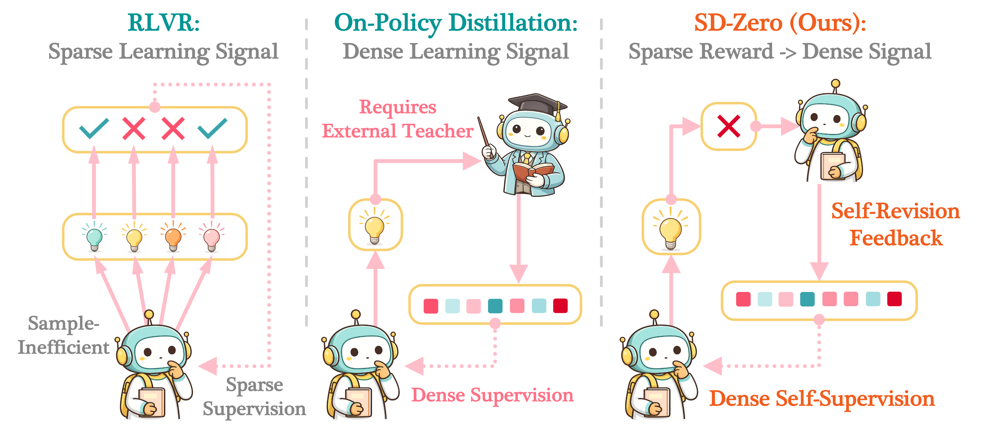
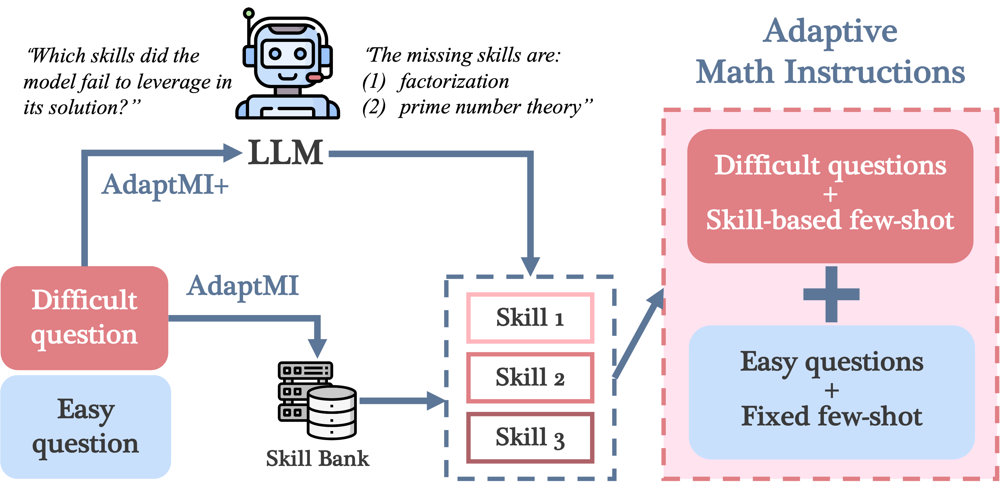
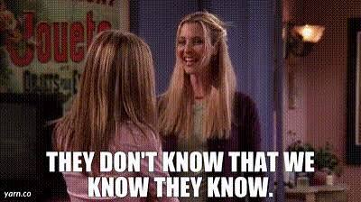
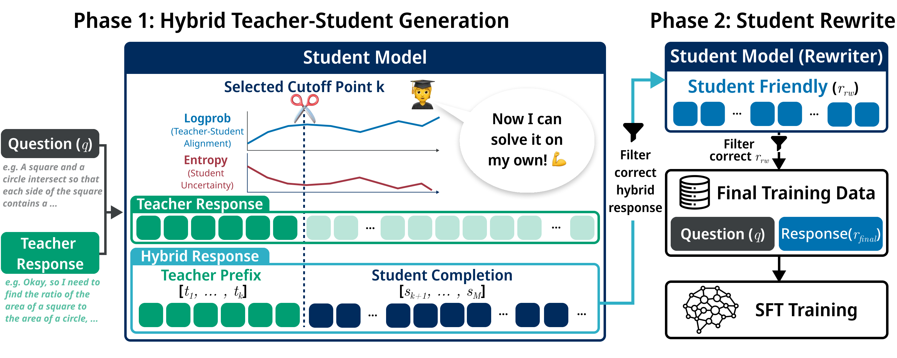
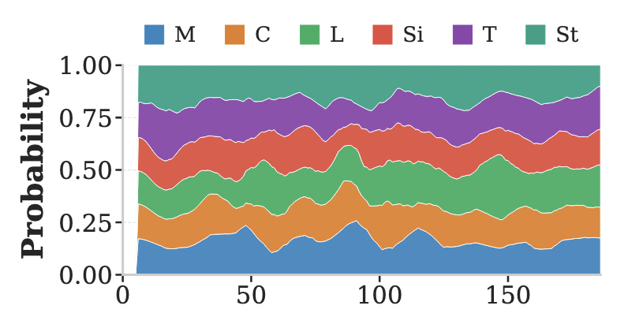
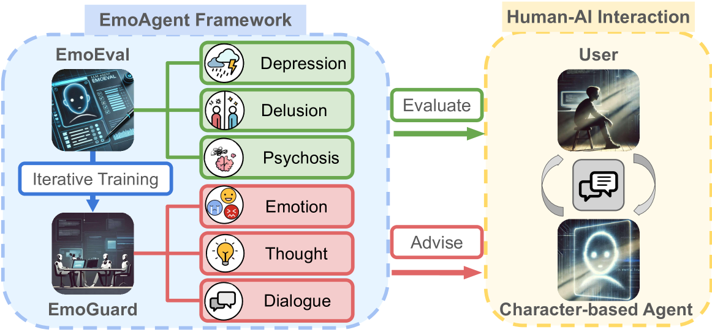
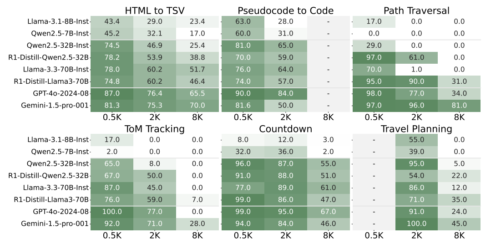

Hi there! I'm Yinghui He, a second-year PhD student at Princeton University Computer Science Department. I'm honored to be advised by Sanjeev Arora at Princeton Language and Intelligence (PLI).
I aim to build LLMs and agents to understand the two-way relationship between artificial intelligence and human cognition. Specifically, I am interested in methodologies of developing human-like, intelligent large language models, and understanding how human cognition can inspire model training.
I finished my Bachelor's degree in Computer Science at the University of Michigan and Shanghai Jiao Tong University, where I had the honor to work with Rada Mihalcea (at the LIT Lab) and Wei Hu.




ICLR 2026 SPOT Workshop



COLM 2025